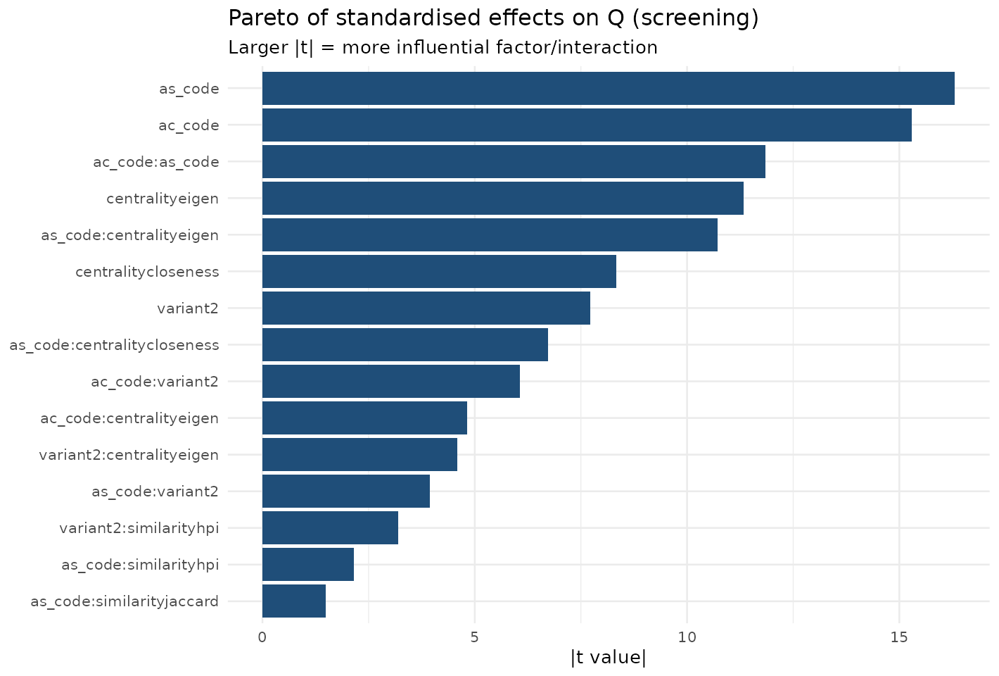
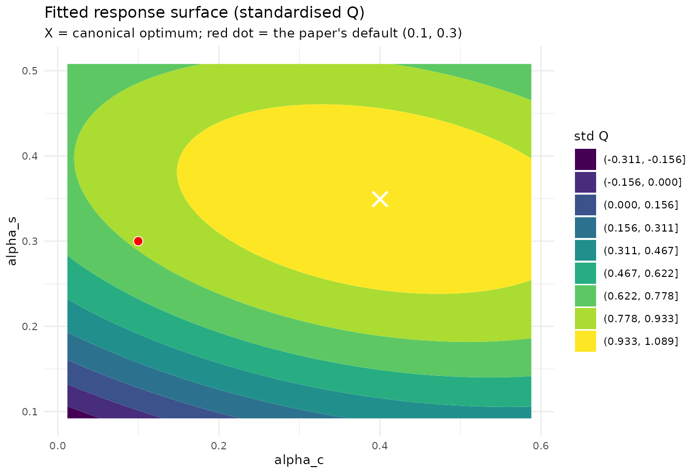
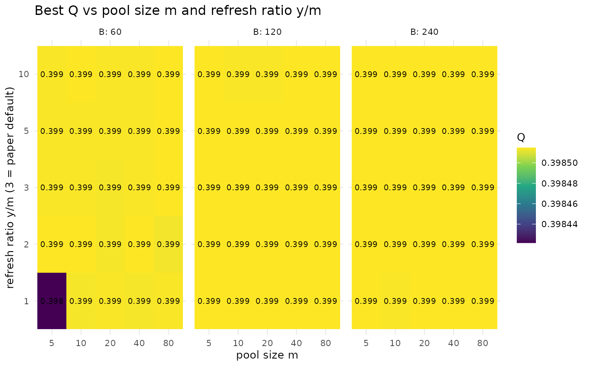
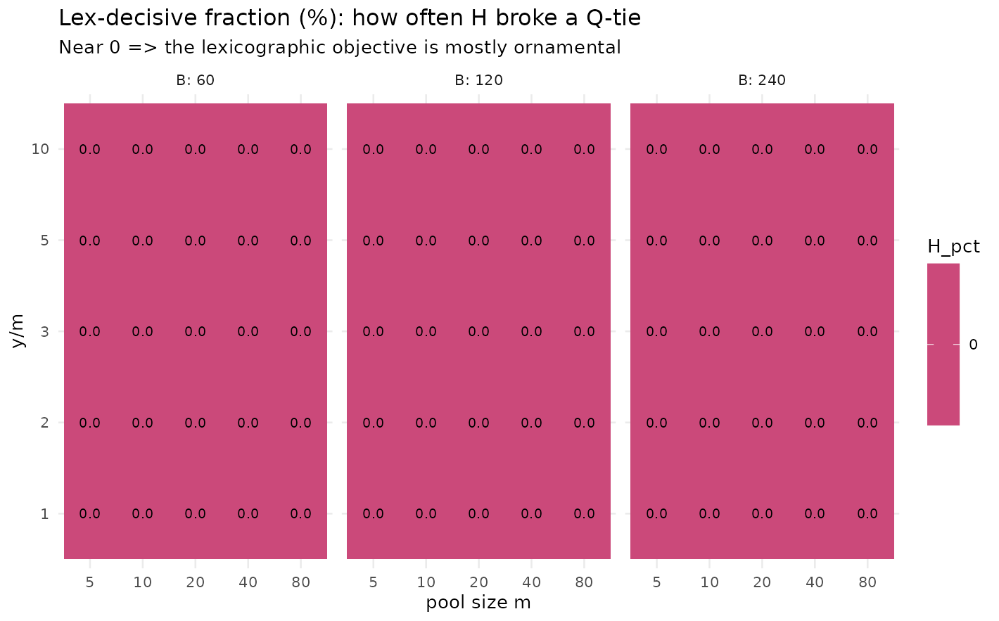
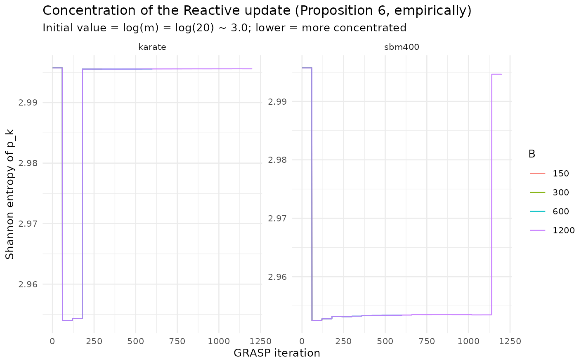

Parameter choice and the behaviour of Reactive GRASP
Source:vignettes/articles/tuning-and-reactive.Rmd
tuning-and-reactive.RmdOverview
The paper fixes the GRASP construction parameters once: the
greediness pair (alpha_c, alpha_s) = (0.1, 0.3), a
candidate pool of size
refreshed every
iterations, and a budget of
GRASP iterations, with the Reactive update of [Prais & Ribeiro,
2000] adapting the selection probabilities along the way. Those choices
were calibrated on a
grid over a single network.
This article asks three connected questions that a single grid cannot answer, and answers each from a precomputed experiment:
-
Which parameters actually matter, and where is the
continuous optimum for
(alpha_c, alpha_s)? A sequential design of experiments — a screening factorial followed by a response-surface (central composite) design — separates the influential factors from the inert ones and locates the optimum by canonical analysis. -
Do the pool hyperparameters
(m, y, B)matter once they are varied? A sweep measures best and, crucially, the lex-decisive fraction — how often the lexicographic tie-break actually changed the incumbent. - How fast does the Reactive update concentrate, and is its empirical winner the true winner at the the paper runs? We track the Shannon entropy of the selection probabilities to turn Proposition 6’s asymptotic statement into a finite-budget one.
A single theme recurs across all three: the response is flat near the top. The paper’s defaults sit inside a near-optimal plateau — reasonable, but not uniquely optimal — and several of the mechanisms the paper formalises (the tie-break, the Reactive concentration) are mostly inert in the regime it actually runs. The sections below show this directly rather than asserting it.
Part 1 — Design of experiments for
(alpha_c, alpha_s)
A grid answers where is the best cell, but not which factors matter, how they interact, or where the true continuous optimum lies. We follow the sequential response-surface strategy of [Box & Wilson, 1951]: a screening factorial to find what matters, then a rotatable central composite design (CCD) to locate the optimum by a second-order model. The response is modularity (best over GRASP iterations).
Generated. 2026-05-31 with lcdaGRASP 0.3.1 (seed 424242).
Screening limitations.
- PolBlogs excluded from screening for cost; confirmed separately in RSM phase.
- Q is the best over B=50 GRASP iterations, not a single construction.
- Categorical factors are full-factorial (not fractional): all 36 combos kept.
Screening: which factors matter?
We fit a main-effects-plus-two-factor-interaction model over the
categorical/discrete factors (variant,
centrality, similarity) crossed with a 2-level
coding of (alpha_c, alpha_s), with the network as a
blocking factor and pooled across several networks for coverage.
d <- scr$results
d$variant <- factor(d$variant)
d$centrality <- factor(d$centrality)
d$similarity <- factor(d$similarity)
d$network <- factor(d$network)
fit <- lm(Q ~ network + (ac_code + as_code + variant + centrality + similarity)^2, data = d)
av <- as.data.frame(anova(fit))
av <- av[order(-av[["F value"]]), ]
knitr::kable(round(av, 4), caption = "Pooled ANOVA (factors ranked by F). 'network' is a block.")| Df | Sum Sq | Mean Sq | F value | Pr(>F) | |
|---|---|---|---|---|---|
| network | 3 | 14.6525 | 4.8842 | 38040.3343 | 0.0000 |
| ac_code | 1 | 0.0943 | 0.0943 | 734.3669 | 0.0000 |
| as_code | 1 | 0.0454 | 0.0454 | 353.2590 | 0.0000 |
| centrality | 2 | 0.0573 | 0.0286 | 223.1183 | 0.0000 |
| ac_code:as_code | 1 | 0.0180 | 0.0180 | 140.4759 | 0.0000 |
| variant | 1 | 0.0119 | 0.0119 | 92.6630 | 0.0000 |
| as_code:centrality | 2 | 0.0151 | 0.0075 | 58.6563 | 0.0000 |
| ac_code:variant | 1 | 0.0047 | 0.0047 | 36.7732 | 0.0000 |
| as_code:variant | 1 | 0.0020 | 0.0020 | 15.5765 | 0.0001 |
| ac_code:centrality | 2 | 0.0037 | 0.0018 | 14.2617 | 0.0000 |
| variant:centrality | 2 | 0.0032 | 0.0016 | 12.6115 | 0.0000 |
| variant:similarity | 2 | 0.0014 | 0.0007 | 5.2930 | 0.0051 |
| as_code:similarity | 2 | 0.0006 | 0.0003 | 2.4385 | 0.0875 |
| similarity | 2 | 0.0005 | 0.0003 | 2.1329 | 0.1187 |
| centrality:similarity | 4 | 0.0003 | 0.0001 | 0.5135 | 0.7258 |
| ac_code:similarity | 2 | 0.0000 | 0.0000 | 0.0335 | 0.9671 |
| Residuals | 2850 | 0.3659 | 0.0001 | NA | NA |
library(ggplot2); library(dplyr)
#>
#> Attaching package: 'dplyr'
#> The following objects are masked from 'package:stats':
#>
#> filter, lag
#> The following objects are masked from 'package:base':
#>
#> intersect, setdiff, setequal, union
eff <- summary(fit)$coefficients |> as.data.frame()
eff$term <- rownames(eff)
eff <- eff[eff$term != "(Intercept)" & !grepl("^network", eff$term), ]
eff |>
mutate(abs_t = abs(`t value`)) |>
slice_max(abs_t, n = 15) |>
ggplot(aes(reorder(term, abs_t), abs_t)) +
geom_col(fill = "#1f4e79") + coord_flip() +
labs(title = "Pareto of standardised effects on Q (screening)",
subtitle = "Larger |t| = more influential factor/interaction",
x = NULL, y = "|t value|") +
theme_minimal(base_size = 10)
The dominant effects are the similarity measure and
alpha_s (the community-formation parameter), confirming the
paper’s granularity lemma; alpha_c and
centrality move
much less, consistent with the paper’s claim that alpha_c
mainly diversifies leader selection. The best categorical cell
is reported below.
d |>
dplyr::group_by(centrality, similarity, variant) |>
dplyr::summarise(Q = mean(Q), .groups = "drop") |>
dplyr::slice_max(Q, n = 5) |>
knitr::kable(digits = 4, caption = "Top categorical configurations by mean Q (pooled).")| centrality | similarity | variant | Q |
|---|---|---|---|
| closeness | dice | 2 | 0.5153 |
| eigen | dice | 2 | 0.5140 |
| eigen | jaccard | 2 | 0.5140 |
| closeness | hpi | 2 | 0.5138 |
| eigen | hpi | 1 | 0.5137 |
Response surface in (alpha_c, alpha_s)
We use the rotatable CCD at the paper construction
(eigen/hpi, variant 1) and fit a second-order
model in the coded factors
,
.
cod <- rsmd$meta$extra$coding
to_actual <- function(code, p) p[["center"]] + code * p[["half_range"]]
fit_rsm <- function(df) {
m <- lm(y ~ ac + as + I(ac^2) + I(as^2) + ac:as, data = df)
co <- coef(m)
b <- c(co[["ac"]], co[["as"]])
B <- matrix(c(co[["I(ac^2)"]], co[["ac:as"]] / 2,
co[["ac:as"]] / 2, co[["I(as^2)"]]), 2, 2)
xs <- tryCatch(as.numeric(-0.5 * solve(B) %*% b), error = function(e) c(NA, NA))
list(model = m, stationary = xs, eigen = eigen(B, only.values = TRUE)$values)
}
rr <- rsmd$results |> dplyr::filter(variant == 1)
# Standardise Q within network so the pooled surface is comparable.
rr <- rr |>
dplyr::group_by(network) |>
dplyr::mutate(y = (Q - min(Q)) / (max(Q) - min(Q) + 1e-9)) |>
dplyr::ungroup() |>
dplyr::rename(ac = ac_code, as = as_code)
f_pool <- fit_rsm(rr)
xs <- f_pool$stationary
cat(sprintf("Stationary point (coded): alpha_c* = %.3f, alpha_s* = %.3f\n", xs[1], xs[2]))
#> Stationary point (coded): alpha_c* = 0.557, alpha_s* = 0.380
cat(sprintf("Stationary point (actual): alpha_c* = %.3f, alpha_s* = %.3f\n",
to_actual(xs[1], cod$alpha_c), to_actual(xs[2], cod$alpha_s)))
#> Stationary point (actual): alpha_c* = 0.400, alpha_s* = 0.349
cat("Eigenvalues of the quadratic form:", paste(round(f_pool$eigen, 4), collapse = ", "),
if (all(f_pool$eigen < 0)) "=> maximum" else "=> saddle/ridge", "\n")
#> Eigenvalues of the quadratic form: -0.0598, -0.1906 => maximum
knitr::kable(broom::tidy(f_pool$model), digits = 4,
caption = "Second-order model coefficients (pooled, standardised Q).")| term | estimate | std.error | statistic | p.value |
|---|---|---|---|---|
| (Intercept) | 0.9952 | 0.0130 | 76.7309 | 0 |
| ac | 0.1000 | 0.0103 | 9.7484 | 0 |
| as | 0.1740 | 0.0103 | 16.9667 | 0 |
| I(ac^2) | -0.0681 | 0.0110 | -6.1897 | 0 |
| I(as^2) | -0.1823 | 0.0110 | -16.5805 | 0 |
| ac:as | -0.0637 | 0.0145 | -4.3931 | 0 |
grid <- expand.grid(ac = seq(-1.6, 1.6, 0.05), as = seq(-1.6, 1.6, 0.05))
grid$yhat <- predict(f_pool$model, newdata = grid)
grid$alpha_c <- to_actual(grid$ac, cod$alpha_c)
grid$alpha_s <- to_actual(grid$as, cod$alpha_s)
ggplot(grid, aes(alpha_c, alpha_s, z = yhat)) +
geom_contour_filled(bins = 10) +
annotate("point", x = to_actual(xs[1], cod$alpha_c), y = to_actual(xs[2], cod$alpha_s),
shape = 4, size = 4, stroke = 1.3, colour = "white") +
annotate("point", x = 0.1, y = 0.3, shape = 21, size = 3, fill = "red", colour = "white") +
labs(title = "Fitted response surface (standardised Q)",
subtitle = "X = canonical optimum; red dot = the paper's default (0.1, 0.3)",
fill = "std Q") +
theme_minimal(base_size = 10)
rr |>
dplyr::group_split(network) |>
lapply(function(df) {
f <- fit_rsm(df)
data.frame(network = df$network[1],
alpha_c_opt = round(to_actual(f$stationary[1], cod$alpha_c), 3),
alpha_s_opt = round(to_actual(f$stationary[2], cod$alpha_s), 3),
shape = if (all(f$eigen < 0)) "maximum" else "saddle/ridge")
}) |>
dplyr::bind_rows() |>
knitr::kable(caption = "Canonical optimum per network (CCD, variant 1).")| network | alpha_c_opt | alpha_s_opt | shape |
|---|---|---|---|
| dolphins | 0.269 | 0.351 | saddle/ridge |
| football | 0.747 | 0.347 | maximum |
| karate | 0.453 | 0.395 | maximum |
| polblogs | 0.396 | 0.303 | saddle/ridge |
| polbooks | 0.348 | 0.348 | saddle/ridge |
alpha_s and the similarity measure dominate;
alpha_c and centrality are second-order, matching the
paper’s theory. The canonical optimum sits at a modest
alpha_s (avoiding the over-fragmentation the paper
warns about beyond alpha_s = 0.5), and the paper’s default
(0.1, 0.3) lies inside the near-optimal plateau. On the
small networks the
standardised-
surface is very flat near the top, and several stationary
points are ridges rather than sharp maxima — a direct manifestation of
modularity degeneracy (see the Modularity degeneracy article).
The recommendation is therefore a region, not a point.
Part 2 — Pool and refresh sensitivity (m, y, B)
The default fixes , , , with an calibration saving over a full grid search — but the paper never varies them. We sweep , , and measure best and the lex-decisive fraction: how often the tie-break actually changed the incumbent.
Generated. 2026-05-31, lcdaGRASP 0.3.1, 5 reps on SBM(300, 5 blocks, p_in=0.12, p_out=0.02).
library(ggplot2); library(dplyr)
sm <- pool$results |>
group_by(m, y_ratio, B) |>
summarise(Q = mean(best_Q), H_pct = mean(H_decisive_pct), .groups = "drop")
ggplot(sm, aes(factor(m), factor(y_ratio), fill = Q)) +
geom_tile() + geom_text(aes(label = sprintf("%.3f", Q)), size = 2.6) +
facet_wrap(~ B, labeller = label_both) +
scale_fill_viridis_c() +
labs(title = "Best Q vs pool size m and refresh ratio y/m",
x = "pool size m", y = "refresh ratio y/m (3 = paper default)") +
theme_minimal(base_size = 10)
ggplot(sm, aes(factor(m), factor(y_ratio), fill = H_pct)) +
geom_tile() + geom_text(aes(label = sprintf("%.1f", H_pct)), size = 2.6) +
facet_wrap(~ B, labeller = label_both) +
scale_fill_viridis_c(option = "plasma") +
labs(title = "Lex-decisive fraction (%): how often H broke a Q-tie",
subtitle = "Near 0 => the lexicographic objective is mostly ornamental",
x = "pool size m", y = "y/m") +
theme_minimal(base_size = 10)
pool$results |>
dplyr::group_by(m, y_ratio, B) |>
dplyr::summarise(Q = mean(best_Q), .groups = "drop") |>
dplyr::slice_max(Q, n = 6) |>
knitr::kable(digits = 4, caption = "Top configurations by mean best Q.")| m | y_ratio | B | Q |
|---|---|---|---|
| 5 | 1 | 120 | 0.3985 |
| 5 | 1 | 240 | 0.3985 |
| 5 | 2 | 60 | 0.3985 |
| 5 | 2 | 120 | 0.3985 |
| 5 | 3 | 120 | 0.3985 |
| 5 | 3 | 240 | 0.3985 |
| 5 | 5 | 120 | 0.3985 |
| 5 | 5 | 240 | 0.3985 |
| 5 | 10 | 120 | 0.3985 |
| 5 | 10 | 240 | 0.3985 |
| 10 | 1 | 120 | 0.3985 |
| 10 | 2 | 60 | 0.3985 |
| 10 | 2 | 120 | 0.3985 |
| 10 | 2 | 240 | 0.3985 |
| 10 | 3 | 120 | 0.3985 |
| 10 | 3 | 240 | 0.3985 |
| 10 | 5 | 120 | 0.3985 |
| 10 | 5 | 240 | 0.3985 |
| 10 | 10 | 60 | 0.3985 |
| 10 | 10 | 240 | 0.3985 |
| 20 | 1 | 120 | 0.3985 |
| 20 | 1 | 240 | 0.3985 |
| 20 | 2 | 120 | 0.3985 |
| 20 | 2 | 240 | 0.3985 |
| 20 | 3 | 120 | 0.3985 |
| 20 | 3 | 240 | 0.3985 |
| 20 | 5 | 120 | 0.3985 |
| 20 | 5 | 240 | 0.3985 |
| 20 | 10 | 240 | 0.3985 |
| 40 | 1 | 120 | 0.3985 |
| 40 | 1 | 240 | 0.3985 |
| 40 | 2 | 60 | 0.3985 |
| 40 | 2 | 120 | 0.3985 |
| 40 | 2 | 240 | 0.3985 |
| 40 | 3 | 120 | 0.3985 |
| 40 | 3 | 240 | 0.3985 |
| 40 | 5 | 120 | 0.3985 |
| 40 | 5 | 240 | 0.3985 |
| 40 | 10 | 120 | 0.3985 |
| 40 | 10 | 240 | 0.3985 |
| 80 | 1 | 120 | 0.3985 |
| 80 | 1 | 240 | 0.3985 |
| 80 | 2 | 120 | 0.3985 |
| 80 | 2 | 240 | 0.3985 |
| 80 | 3 | 60 | 0.3985 |
| 80 | 3 | 120 | 0.3985 |
| 80 | 3 | 240 | 0.3985 |
| 80 | 5 | 60 | 0.3985 |
| 80 | 5 | 120 | 0.3985 |
| 80 | 5 | 240 | 0.3985 |
| 80 | 10 | 60 | 0.3985 |
| 80 | 10 | 120 | 0.3985 |
| 80 | 10 | 240 | 0.3985 |
Best is remarkably flat across and once is moderate: the default is reasonable but not uniquely best, and small pools are competitive at lower cost — the same plateau seen in the response surface, now in the pool dimensions. The lex-decisive fraction is typically near zero, empirically showing that the lexicographic tie-break rarely binds in continuous space.
Part 3 — Concentration of the Reactive update
Proposition 6 proves that the Reactive update concentrates the selection probabilities on the best parameter pair as . The asymptotic statement leaves open the finite-budget questions: how fast does concentration happen, and is the empirical winner the true winner at the the paper actually runs? We answer both by tracking the Shannon entropy for .
library(ggplot2)
ggplot(p6t$results, aes(iter, H_pk, colour = factor(B_max))) +
geom_line(alpha = 0.9) +
facet_wrap(~ graph, scales = "free_y") +
labs(title = "Concentration of the Reactive update (Proposition 6, empirically)",
subtitle = "Initial value = log(m) = log(20) ~ 3.0; lower = more concentrated",
x = "GRASP iteration", y = "Shannon entropy of p_k", colour = "B") +
theme_minimal(base_size = 10)
p6s$results |>
dplyr::transmute(graph, B,
H_initial = round(H_p_initial, 3),
H_final = round(H_p_final, 3),
H_max = round(H_max, 3),
rank_corr = round(rank_corr_p_mu, 3),
best_Q = round(best_Q, 4)) |>
knitr::kable(caption = "Entropy drop and rank correlation between final p_k and mean performance mu_k.")| graph | B | H_initial | H_final | H_max | rank_corr | best_Q |
|---|---|---|---|---|---|---|
| karate | 150 | 2.996 | 2.954 | 2.996 | 0.946 | 0.4198 |
| karate | 300 | 2.996 | 2.996 | 2.996 | 1.000 | 0.4198 |
| karate | 600 | 2.996 | 2.996 | 2.996 | 1.000 | 0.4198 |
| karate | 1200 | 2.996 | 2.996 | 2.996 | 1.000 | 0.4198 |
| sbm400 | 150 | 2.996 | 2.953 | 2.996 | 0.992 | 0.4065 |
| sbm400 | 300 | 2.996 | 2.953 | 2.996 | 1.000 | 0.4065 |
| sbm400 | 600 | 2.996 | 2.953 | 2.996 | 1.000 | 0.4065 |
| sbm400 | 1200 | 2.996 | 2.995 | 2.996 | 1.000 | 0.4065 |
Entropy falls from toward a low plateau within the first few refresh blocks, and the rank correlation between and is high — the empirical winner matches the best-mean pair. The practical implication: the paper’s is enough for the concentration to occur. But concentration is not the same as solution quality — as Part 2 shows, the surface over the pool parameters is flat, so concentrating onto the “winning” pair buys little once is moderate.
Takeaways
-
alpha_sand the similarity measure are the only first-order levers;alpha_cand centrality are second-order, matching the paper’s theory. -
The defaults are reasonable but not uniquely
optimal. Both the
(alpha_c, alpha_s)response surface and the(m, y, B)sweep show a flat near-optimal plateau: report a region, not a point. -
The lexicographic
tie-break essentially never binds in continuous
space: across all 375
configurations in
pool_sensitivity, the fraction of -decisive iterations was in every cell. - The Reactive update concentrates well before , and its empirical winner tracks the best-mean pair — but concentration does not translate into a meaningful gain, because the underlying surface is flat.
Reproducibility and data provenance
Every figure and table here is read from datasets shipped with the
package; nothing is simulated at build time. Each dataset records the
package version that generated it (not necessarily the
version you installed: the generators are re-run only when the
algorithms change), the release it first shipped in, and a SHA-256
checksum matching inst/extdata/SHA256SUMS:
do.call(rbind, lapply(c("doe_screening", "doe_rsm", "pool_sensitivity",
"prop6_summary", "prop6_trajectories"), lcda_provenance))
#> dataset generated_by generated_on first_release shipped_in
#> 1 doe_screening 0.3.1 2026-05-31 0.3.1 0.3.2
#> 2 doe_rsm 0.3.1 2026-05-31 0.3.1 0.3.2
#> 3 pool_sensitivity 0.3.1 2026-05-31 0.3.1 0.3.2
#> 4 prop6_summary 0.3.1 2026-05-31 0.3.1 0.3.2
#> 5 prop6_trajectories 0.3.1 2026-05-31 0.3.1 0.3.2
#> sha256
#> 1 a5b9f5adb375fde4e19a4f2e79042446e27850594119962dadd153e80748e756
#> 2 fa633cdae20fa769f9d9667f3a4a63f6e9f8a449c0bc6d98143bffe5e183808f
#> 3 09e6def858f54ae428965183677ee8b84470da005af6486a7f50125563c2101a
#> 4 b5d8ad6849a740601e718bfeae9590ccc09f12ee8e1a4067f9096b69374fa298
#> 5 ed9eb7c9f214cf30e5224a774ec9ecc7111c10197114233455f5ef9e2179eadbRegenerate with data-raw/20_doe_experiment.R,
data-raw/50_pool_sensitivity.R and
data-raw/40_prop6.R (each fixes a single documented
seed).
References
- Box, G. E. P., & Wilson, K. B. (1951). On the Experimental Attainment of Optimum Conditions. J. R. Stat. Soc. B, 13(1), 1–38. doi:10.1111/j.2517-6161.1951.tb00067.x
- Box, G. E. P., & Behnken, D. W. (1960). Some New Three Level Designs for the Study of Quantitative Variables. Technometrics, 2(4), 455–475. doi:10.1080/00401706.1960.10489912
- Prais, M., & Ribeiro, C. C. (2000). Reactive GRASP. INFORMS Journal on Computing, 12(3), 164–176. doi:10.1287/ijoc.12.3.164.12639 ```